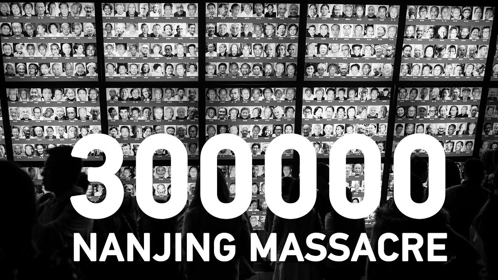

Nanjing Massacre

The Nanjing Massacre, also called Nanking Rape, was an atrocity performed by the Imperial Empire of Japanball during WWII. About 50,000-300,000 casualties were made, most being innocent civilians. Chinese civilians were mercilessly raped, tortured, killed and buried alive, giving it another name "The Rape of Nanking". The Second-Sino war exploded, with Chinaball forces and Imperial Japanball forces on a war. In the middle, Japanballs forces decide to massacre civilians in Nanjing in order to frighten or drop the morale of Chinaball forces. Its estimated from a minimum of 40,000 to a maximum of 300,000. Japanese side declares it at 250,000, while the Chinese government claims 300,000. This went on for 6 weeks.